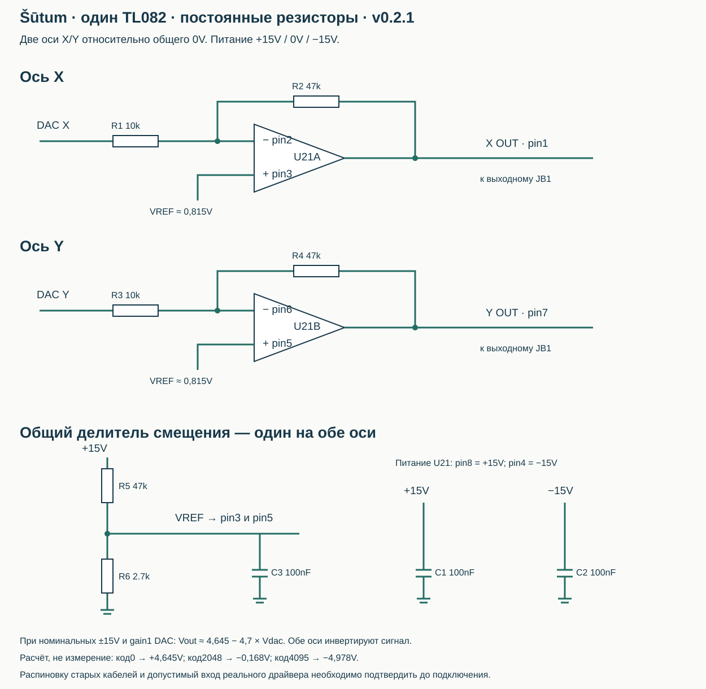

Проверен пользовательский файл от 29 октября. 35 выводов / 10 перемычек; электрических разрывов и замыканий разных цепей не найдено. Внесена одна поправка: W5 теперь G13 → D12 вместо G13 → C12, потому что C12 занят выводом C3. D12 свободна на той же заводской дорожке. JB1 теперь I1/I2/I3. Резисторов шесть, керамических конденсаторов три. Провод W2 в J3 у JB1 и выводы R5 в J10/J13 рядом с JB2/JB3 остаются в частично доступных местах. Подписи перемещённых пассивных деталей обновлены; сами детали и остальные девять проводов не перемещались. Закрытые корпуса не измерены: учтена описанная нижняя тройка площадок, а не произвольные три ряда.
Открыть в Perfboard Designer · Контакты CSV · Перемычки CSV
TL082 содержит два ОУ: один используется для X, другой для Y. Это адаптация первых каскадов референса Instructables с общим фиксированным делителем смещения. Порядок деталей старой платы не копируется по догадке. Подстроечники и пятиштырьковый выход не нужны.
Расчётная схема, аппаратно не проверена. Новые разъёмы заданы ниже; порядок проводов старых кабелей неизвестен. Перед подключением нужны прозвонка кабелей, проверка ±15V относительно 0V и допустимого сигнала драйвера. Причина повреждения старого TL082 пока не установлена. Перенос его старых штекеров без проверки недопустим.

| Деталь | Количество | Назначение |
|---|---|---|
| TL082 DIP8 и панелька | 1 + 1 | Исправный экземпляр; маркировка/производитель определяют допустимое питание. |
| 10 кОм, 1%, 0,25 Вт | 2 | R1, R3 — входные |
| 47 кОм, 1%, 0,25 Вт | 3 | R2/R4 — обратная связь; R5 — верх делителя |
| 2,7 кОм, 1%, 0,25 Вт | 1 | R6 — низ делителя |
| 100 нФ, X7R, 50 В, керамика, без полярности | 3 | C1/C2 — развязка плеч питания; C3 — фильтр общей точки смещения |
| XH 3 контакта | 3 | JB1 выход / JB2 вход / JB3 питание. Все три обязательно подписать; назначение одинаковых корпусов различается. |
| Малая perma 17×10 и изолированный провод | 1 | 10 перемычек, 0 разрезов. |
Наличие этих номиналов у владельца пока не подтверждено. От подстроечников ждать не требуется, но отсутствующий фиксированный номинал нельзя заменять произвольным.
| Слева направо, вид корпусов | Выводы 1 / 2 / 3 | Отверстия |
|---|---|---|
| JB1 слева — к драйверу | X_OUT / GND / Y_OUT | I1 / I2 / I3 |
| JB2 в центре — от DAC | X_IN / GND / Y_IN | J7 / J8 / J9 |
| JB3 справа — питание | +15V / 0V / −15V | J14 / J15 / J16 |
Порядок выводов здесь определён для новой платы. Это не результат прозвонки старых кабелей. Дополнительный маленький разъём на драйвере не используется и не идентифицирован.
Сторона с заводскими подписями и корпусами: J сверху / A снизу, 1…17 слева направо. С обратной стороны после переворота сверху вниз — A сверху / J снизу, номера сохраняются. U21 F10…F13/E10…E13, выемка СЛЕВА. Нумерация верхнего ряда: 8,7,6,5; нижнего: 1,2,3,4. C1/C2 на стороне пайки возле питания U21. Остальные детали спереди; перемычки сзади. Длинные выводы резисторов изолировать. Между E/F заводская связь отсутствует. Шин питания нет.


Приняты размеры резисторов до 6,3×2,3 мм, керамики до 5×3 мм. Подстроечников и их тесных посадочных мест больше нет. Корпуса имеющихся XH, глубина со вставленными штекерами и высота монтажа ещё не измерены; модель не гарантирует механическую собираемость всего узла.
При +15V: VREF=0.814889V; коэффициент инверсии −4,7. Vout=5,7×VREF−4,7×Vdac. Для текущего gain1 MCP4822 номинальный диапазон выходов 4.645…-4.978V; в стартовой середине кода2048 — -0.168V. Это расчёт идеальной схемы, не аппаратный тест. Ноль получается примерно при коде1976.5, а не ровно2048. Разброс резисторов, питания, DAC и TL082 потребует измерения смещения обеих осей.
Выбор даёт примерно биполярный размах около ±4,8V, но допустимость такого сигнала для конкретного драйвера пока не подтверждена. Внутренний gain DAC менять не надо: gain2 здесь удвоит размах сигнала вниз и может вывести за допустимый вход. Само по себе питание TL082 ±15V не означает, что драйвер допускает сигнал ±15V.
Сохранены текущая прошивка и основной масштаб 0,25. Измеренное смещение и направления осей можно учесть в отдельном изменении прошивки; пока ни центр, ни инверсия программно не менялись. Это не точное воспроизведение старой неизвестной передаточной функции.
| Вывод | Отверстие | Цепь |
|---|---|---|
| U21.1 | E10 | X_OUT |
| U21.2 | E11 | X_SUM |
| U21.3 | E12 | VREF |
| U21.4 | E13 | -15V |
| U21.5 | F13 | VREF |
| U21.6 | F12 | Y_SUM |
| U21.7 | F11 | Y_OUT |
| U21.8 | F10 | +15V |
| JB1.1 | I1 | X_OUT |
| JB1.2 | I2 | GND |
| JB1.3 | I3 | Y_OUT |
| JB2.1 | J7 | X_IN |
| JB2.2 | J8 | GND |
| JB2.3 | J9 | Y_IN |
| JB3.1 | J14 | +15V |
| JB3.2 | J15 | GND |
| JB3.3 | J16 | -15V |
| R1.1 | H7 | X_IN |
| R1.2 | H4 | X_SUM |
| R2.1 | G1 | X_OUT |
| R2.2 | G4 | X_SUM |
| R3.1 | H9 | Y_IN |
| R3.2 | H12 | Y_SUM |
| R4.1 | G11 | Y_OUT |
| R4.2 | G17 | Y_SUM |
| R5.1 | J10 | +15V |
| R5.2 | J13 | VREF |
| R6.1 | A12 | VREF |
| R6.2 | A15 | GND |
| C1.1 | G10 | +15V |
| C1.2 | G8 | GND |
| C2.1 | B13 | -15V |
| C2.2 | B15 | GND |
| C3.1 | C12 | VREF |
| C3.2 | C15 | GND |
| Провод | Отверстия | Цепь |
|---|---|---|
| W1 | F1 → D10 | X_OUT |
| W2 | J3 → I11 | Y_OUT |
| W3 | F4 → D11 | X_SUM |
| W4 | H17 → I12 | Y_SUM |
| W5 | G13 → D12 | VREF |
| W6 | H10 → F14 | +15V |
| W7 | F2 → F8 | GND |
| W8 | H8 → H15 | GND |
| W9 | G15 → E15 | GND |
| W10 | F16 → D13 | -15V |
Проверка модели: 35 выводов, нет конфликтов занятых отверстий, коротких замыканий разных цепей и разрывов нужных цепей. Проверяются заводские полосы и реальные перемычки; резисторы не считаются проводниками нулевого сопротивления. Это не проверка железа.
Источники: Instructables, шаг 7; MCP4822; UTC TL082. Оригинальное изображение сохранено в hardware/reference. Генератор tools/build_analog_fixed.py. Основная плата v0.8.4 не меняется.